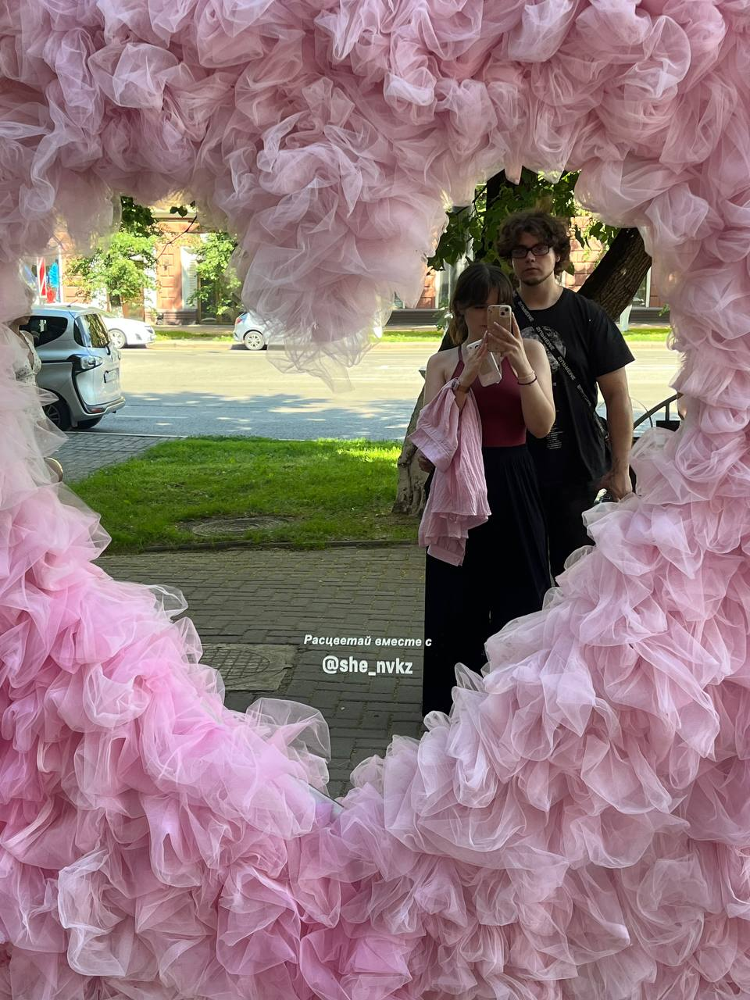
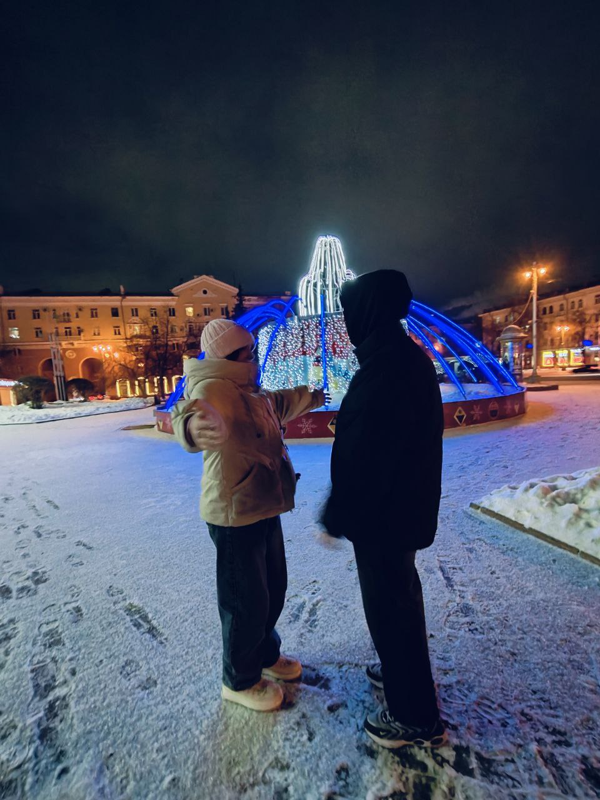
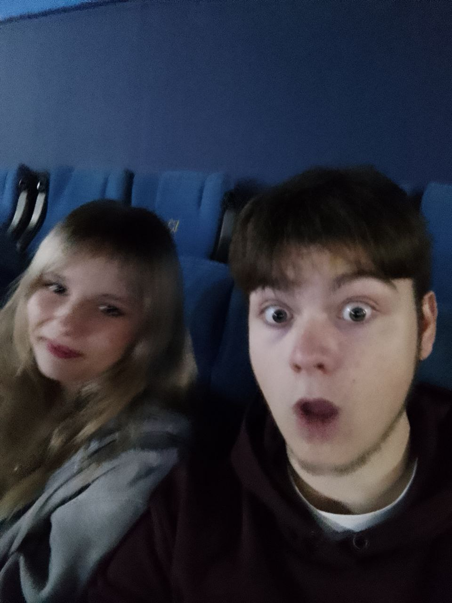
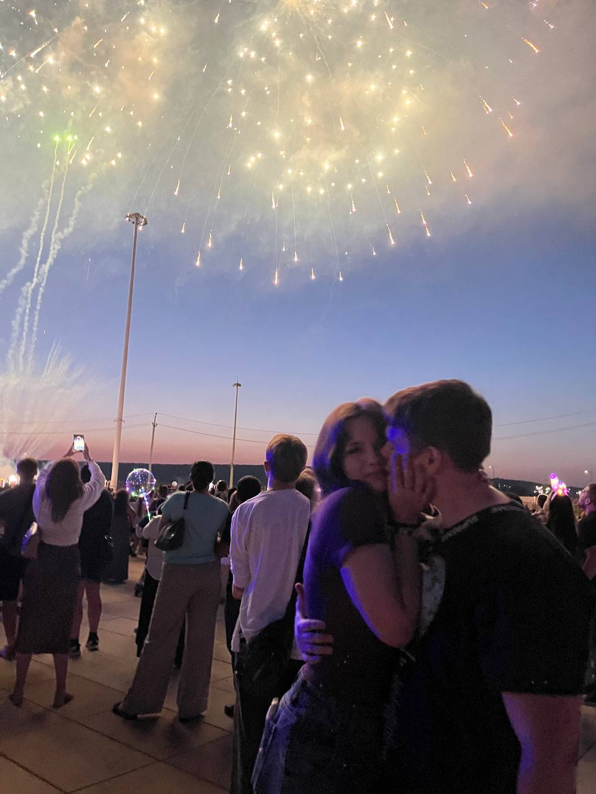
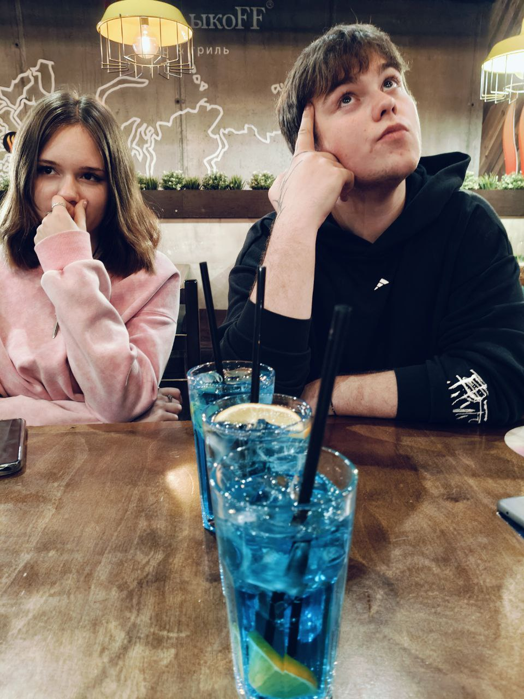
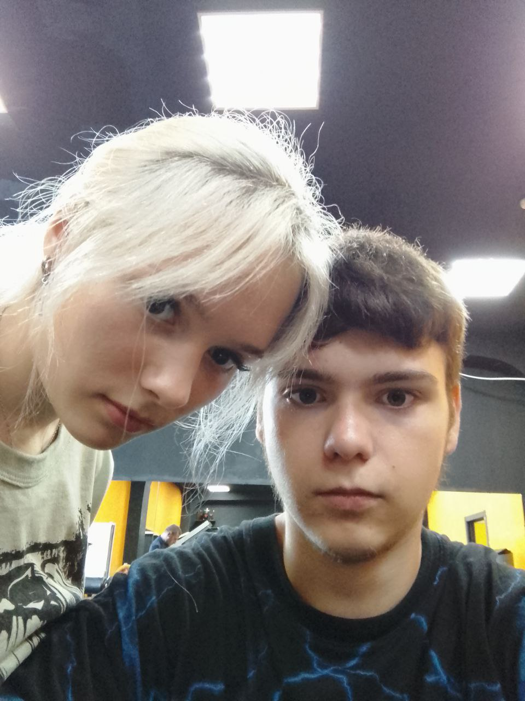
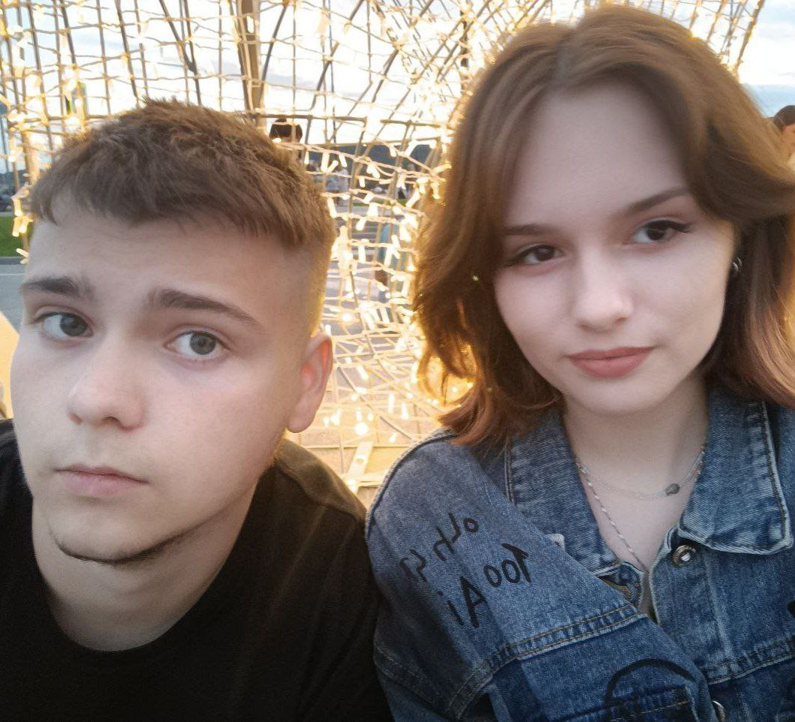
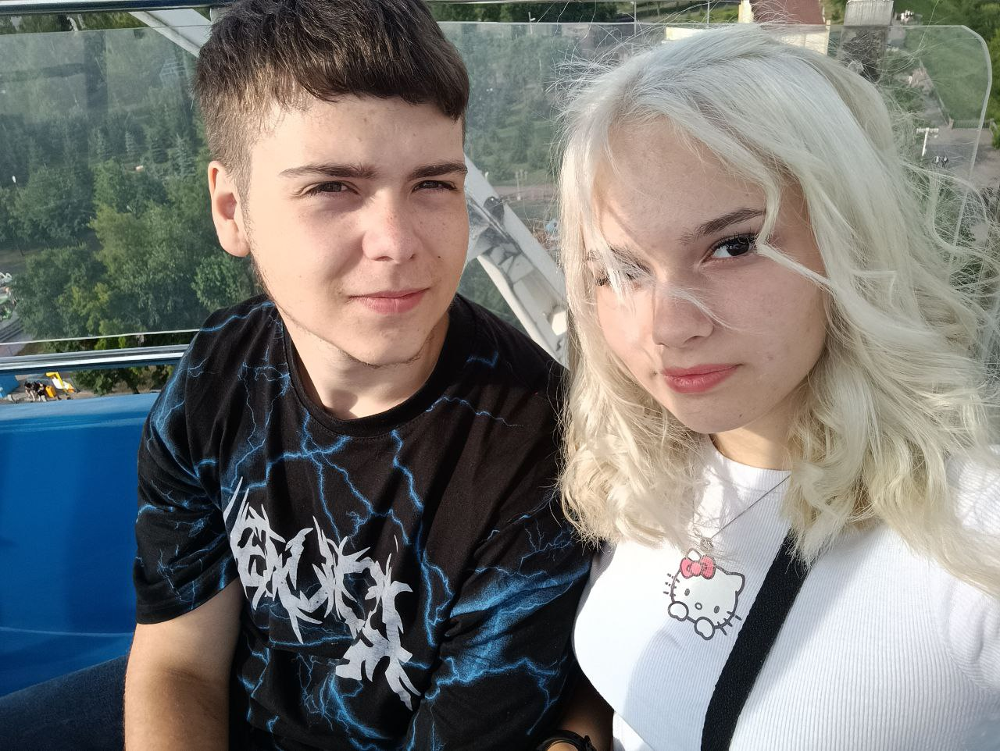
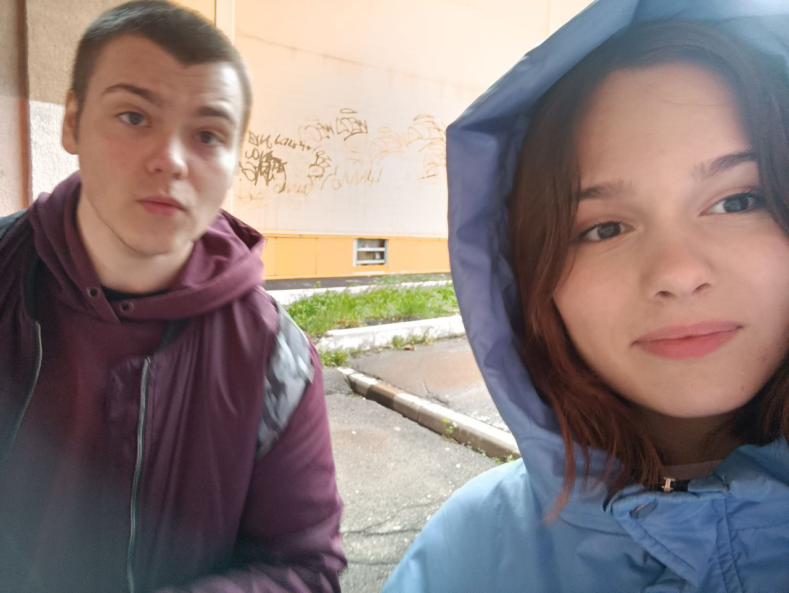

у меня на тебя

есть особые планы

будем вместе лечить

душевные раны
у меня ведь тебя

никого нету ближе

опускаемся, но вместе

ниже, ниже, ниже!
через тысячи холодных дней

мы с тобой прорвемся, слышишь?

просто посмотри в мои глаза и ты в них все увидишь

Будем словно дети под дождём
Мы с тобой ещё смеяться
Ну же, подожди совсем чуть-чуть
Ведь нам нельзя сломаться.
У меня для тебя
Есть секретные метки
Выдох, вдох, шаг вперёд
Вылетаем из клетки
От тебя до меня
Никого нету ближе
Пристегнись, мы на взлёт
Выше, выше, выше!
Через тысячи холодных дней
Мы с тобой прорвёмся, слышишь
Просто посмотри в мои глаза
И ты в них всё увидишь
Будем словно дети под дождём
Мы с тобой ещё смеяться
Ну же, подожди совсем чуть-чуть
Ведь нам нельзя сломаться